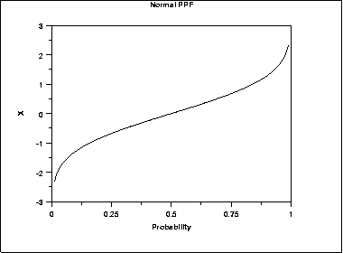
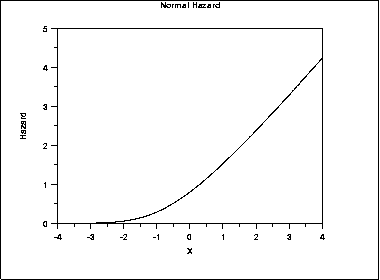
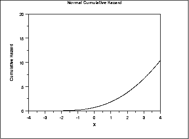
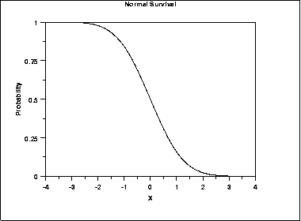
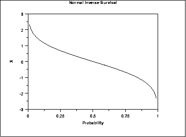

1.3. EDA Techniques
1.3.6. Probability Distributions
1.3.6.2. |
Related Distributions |
\( \int_{a}^{b} {f(x) dx} = Pr[a \le X \le b] \)
For a discrete distribution, the pdf is the probability that the variate takes the value x.
\( f(x) = Pr[X = x] \)
The following is the plot of the normal probability density function.

\( F(x) = Pr[X \le x] = \alpha \)
For a continuous distribution, this can be expressed mathematically as
\( F(x) = \int_{-\infty}^{x} {f(\mu) d\mu} \)
For a discrete distribution, the cdf can be expressed as
\( F(x) = \sum_{i=0}^{x} {f(i)} \)
The following is the plot of the normal cumulative distribution function.

The horizontal axis is the allowable domain for the given probability function. Since the vertical axis is a probability, it must fall between zero and one. It increases from zero to one as we go from left to right on the horizontal axis.
\( Pr[X \le G(\alpha)] = \alpha \)
or alternatively
\( x = G(\alpha) = G(F(x)) \)
The following is the plot of the normal percent point function.

Since the horizontal axis is a probability, it goes from zero to one. The vertical axis goes from the smallest to the largest value of the cumulative distribution function.
\( h(x) = \frac {f(x)} {S(x)} = \frac {f(x)} {1 - F(x)} \)
The following is the plot of the normal distribution hazard function.

Hazard plots are most commonly used in reliability applications. Note that Johnson, Kotz, and Balakrishnan refer to this as the conditional failure density function rather than the hazard function.
\( H(x) = \int_{-\infty}^{x} {h(\mu) d\mu} \)
This can alternatively be expressed as
\( H(x) = -\ln {(1 - F(x))} \)
The following is the plot of the normal cumulative hazard function.

Cumulative hazard plots are most commonly used in reliability applications. Note that Johnson, Kotz, and Balakrishnan refer to this as the hazard function rather than the cumulative hazard function.
\( S(x) = Pr[X > x] = 1 - F(x) \)
The following is the plot of the normal distribution survival function.

For a survival function, the y value on the graph starts at 1 and monotonically decreases to zero. The survival function should be compared to the cumulative distribution function.
\( Z(\alpha) = G(1 - \alpha) \)
The following is the plot of the normal distribution inverse survival function.

As with the percent point function, the horizontal axis is a probability. Therefore the horizontal axis goes from 0 to 1 regardless of the particular distribution. The appearance is similar to the percent point function. However, instead of going from the smallest to the largest value on the vertical axis, it goes from the largest to the smallest value.